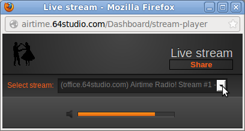
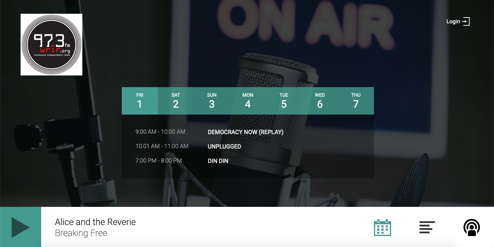

See what LibreTime can do!
In the Master Panel, beneath the ON AIR indicator, you will find the LISTEN button. This button opens a pop-up Live stream window, which enables you to monitor the streams that have been configured previously in the Streams page on the System menu. In the Live stream window, a drop-down menu enables you to switch between the streams which are currently available. Both the streaming server and name of the stream are shown. Your station logo is shown in the top left corner of the window, if you have uploaded one via the Preferences page on the System menu.

Note: the volume controls in the Listen window only affect what you hear on your computer, not LibreTime’s main output
To display the URL of the stream you are monitoring, so that you can copy and paste it into an email or web page, click the Share button. Click the X icon to the right of the URL to return to the drop-down menu of available streams.

LibreTime includes a mini-site, which can be accessed at serverIP (for local installations), or libretime.yourdomain.com or cloudvmIP (for installations to a server on a domain). The site includes your logo and station description (set under Settings > General), the login button to the LibreTime interface, the schedule for the next seven days, podcast tabs, and a live feed of your station with the currently playing artist and track displayed.
The background of the radio page can be changed; see instructions here.